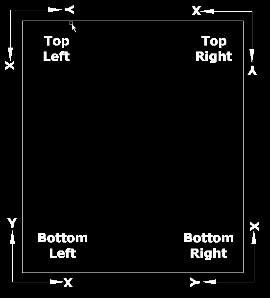

Program header
The program header is the start of the program and executed only once during program running and it consists of following:
-
Program Number
-
Program Name as comment
-
ID of the Controller (Tandem operation)
-
Program Specification
-
XY Program Limits
-
Program Dimensioning
-
Dual head Synchronization (Tandem operation)
-
Check Work Offset & Special functions
-
Activation of G17 (XY-Plane) with Sheet rotation
Structure:
%1 (Sample.DIN) |
Program Number & Program Name as comment |
CNC ID |
ID of the Controller (1 or 2) |
Sheet_Size_X |
Program Specification |
Sheet_Size_Y |
|
Job_Size_X |
|
Job_Size_Y |
|
X_Limit_Minus |
XY Program Limits |
X_Limit_Plus |
|
Y_Limit_Minus |
|
Y_Limit_Plus |
|
G90 |
Program Dimensioning (ABS) |
M50 |
Dual Head Synchronization |
M15 |
Check Work Offset & Special functions |
G17 D=SheetRotation |
XY Plane is rotated w.r.t Sheet |
Program Number
The program number is always assigned with the value %1. Since all the Laser technology programs are assigned as Sub Programs and called from the Main program using the number 1. Hence it is important to make sure the program number.
-
Program Number must be always %1
Program Name
The program name is defined in the program as a comment and will be useful for block search functions. Depends on the name, the PLC will save the current block numbers, Co- ordinates, etc., of the program and when loaded again, their respective values are retrieved from the PLC.
-
Program Name must be in comment
CNC ID
For Dual head tandem operation, 2 programs will be generated for a single job and the CNC ID will specify which program to be loaded in the controller as follows:
-
CNC_ID = 1, will contain the first half of the program and to be loaded in the controller, where the X-axis machine origin point starts.
-
CNC_ID = 2, will contain the second half of the program and to be loaded in the controller, where the X-axis machine positive stroke limit is possible.
The Values are assigned to P-fields and for better understanding the P-fields are globally declared internally in the program as follows:
#globdef CNC_ID P1909
-
The CNC_ID is required only for Dual head tandem operation
Program Specification
The program specification defines the sheet size & Job size along X & Y axis. Based on the Machine Origin, the positive or negative sign in the size to be indicated.

-
Bottom Left = X+, Y+
-
Bottom Right = X+, Y-
-
Top Left = X-, Y+
-
Top Right = X- Y-
The Values are assigned to P-fields and for better understanding the P-fields are globally declared internally in the program as follows:
#globdef Sheet_Size_X P1900
#globdef Sheet_Size_Y P1901
#globdef Job_Size_X P1902
#globdef Job_Size_Y P1903
-
This information will be useful for Scrap cut & Boundary check programs.
XY Program Limits
The X & Y-axis program limits are defined to ensure the machine strokes are within the limits. They are most useful in Dual head tandem operation, where a single job is separated between 2 heads and their limits are defined for the safety, boundary check program and Auto Lubrication program .
The Values are assigned to P-fields and for better understanding the P-fields are globally declared internally in the program as follows:
#globdef X_Limit_Minus P1910
#globdef X_Limit_Plus P1911
#globdef Y_Limit_Minus P1912
#globdef Y_Limit_Plus P1913
-
This information will be more useful for Dual head tandem operation
Program Dimensioning
The program dimensioning defines the dimensions of axes in the program is absolute or incremental.
Syntax: G90/G91
Dual Head Synchronization
If there is any dual head tandem operation, then ‘M50’ command will synchronize between two controllers and check for the program name, work offset etc., and then proceed further for cutting.
Syntax: M50
-
The M50 command will be used only for Tandem Operation, else not required
Check Work Offset and Special functions
The first M15 command in the program will check for the following:
-
With captured work offset and job size, the maximum stroke limits of X & Y axis in the program are calculated and then cross checked with their end limits. If the Stroke are within the limits, then proceed further else the program will be aborted.
-
Check for any special sub program functions such as Nozzle cleaning, Auto lubrication etc., is active before start of the cutting. Generally, during normal cutting, if any of the special functions are active, they will wait for M15 command where the tool will be up.
Syntax: M15
Activation of G17 (XY-Plane) with Sheet rotation
Activates the XY-Plane with required rotation with respect to sheet, such that the program is also rotated during cutting and the jobs are fitted within the rotated sheet.
Syntax: G17 D=SheetRotation
-
From the Edge detection function, the rotation of sheet is calculated
Program Header Example:
%1 (PP_Sample_Pgm.DIN)
CNC_ID=1 (Only for Tandem Operation)
Sheet_Size_X = 120
Sheet_Size_Y = 600
Job_Size_X = 105
Job_Size_Y = 573
X_Limit_Minus = 10
X_Limit_Plus = 115
Y_Limit_Minus = 10
Y_Limit_Plus = 583
G90
M50 (Only for Tandem Operation)
M15
G17 D=SheetRotation